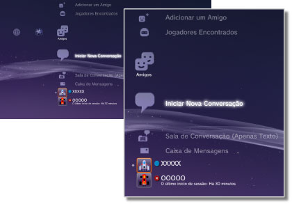

Amigos > Categoria de Amigos
Categoria de Amigos
Para utilizar esta função, poderá ter de actualizar o software de sistema.
Envie ou receba mensagens ou entre em conversações com outros utilizadores PS3™ na PlayStation®Network. Terá que criar (inscrever-se na) uma conta PlayStation®Network para utilizar estas funcionalidades. Os ícones seguintes são apresentados no menu  (Amigos). Os ícones apresentados variam consoante as condições de utilização.
(Amigos). Os ícones apresentados variam consoante as condições de utilização.

 |
Lista de Contactos bloqueados | Apresenta uma lista das pessoas na sua lista de contactos bloqueados. |
|---|---|---|
 |
Adicionar um Amigo | Envia um pedido para adicionar uma pessoa à sua lista de Amigos. |
 |
Jogadores Encontrados | Apresenta uma lista das pessoas com quem jogou online jogos do formato PlayStation®3*. Seleccione este ícone para enviar uma mensagem a um jogador ou pedir para adicionar um Amigo. |
 |
Iniciar Nova Conversação | Iniciar uma conversação. |
 |
Sala de Conversação (Apenas Texto) | Este ícone é apresentado quando houver uma sala de conversação para conversação por texto. Se for adicionada uma nova sala de conversação,  é apresentado. é apresentado. |
 |
Sala de Conversação de Voz/Vídeo | Este ícone é apresentado durante uma conversação de voz / vídeo. |
 |
Caixa de Mensagens | Crie mensagens novas e veja as mensagens recebidas e enviadas. |
| (a sua ID online) | O avatar que seleccionar quando criar a sua conta PlayStation®Network é apresentado aqui. | |
| (nome do Amigo) | O ícone indica uma pessoa da sua lista de Amigos. Ao seleccionar este ícone, pode enviar e receber mensagens ou iniciar uma conversação com Amigos. |
| * |
Alguns jogos podem não suportar esta funcionalidade. |
|---|
Notas
- No sistema PS3™, os utilizadores que estão na sua lista de Amigos são chamados "Amigos". E os e-mails que enviar e receber em (Amigos) são chamados "mensagens".
- Podem ser apresentados até 50 jogadores em
 (Jogadores Encontrados). Quando for atingido o limite, a entrada mais antiga é eliminada automaticamente sempre que for adicionado um novo jogador.
(Jogadores Encontrados). Quando for atingido o limite, a entrada mais antiga é eliminada automaticamente sempre que for adicionado um novo jogador. - Para estabelecer conversações de voz, é necessário um dispositivo de entrada / saída de áudio (tal como um auscultador, vendido em separado). Para estabelecer conversações de vídeo, também é necessário uma câmara USB (vendida em separado).
- Pode utilizar auscultadores USB / auscultadores Bluetooth® / câmaras USB EyeToy™ / PlayStation®Eye / câmaras USB compatíveis com classe de vídeo USB (UVC) no sistema PS3™.
- Quando ligar uma câmara USB através de um hub USB, utilize um hub que suporte USB 2.0. Se for utilizado um hub que não suporte USB 2.0, pode ocorrer degradação da imagem ou a imagem pode não ser apresentada.
- Para mais informações sobre os periféricos suportados e as instruções de utilização, contacte o vendedor onde os periféricos são vendidos.